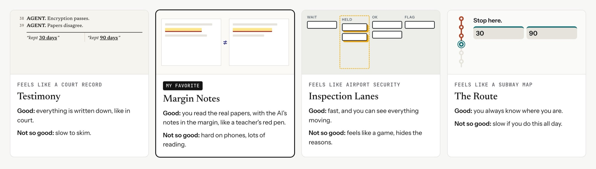
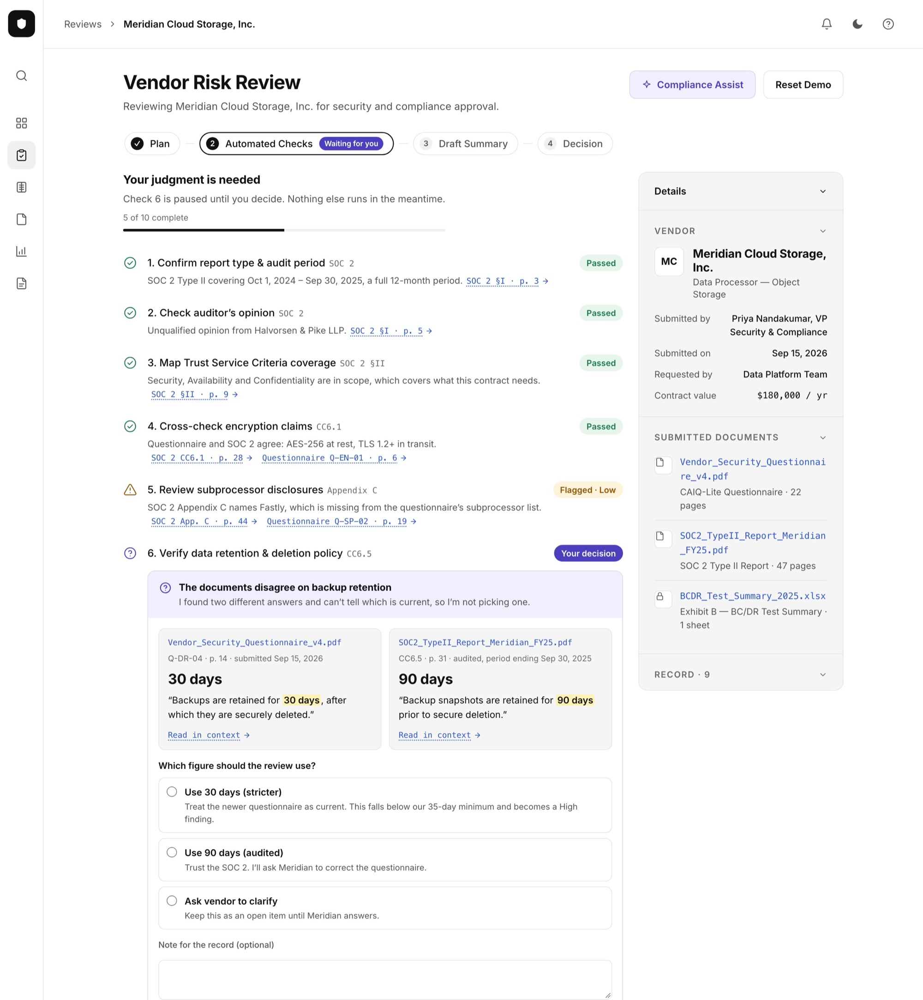
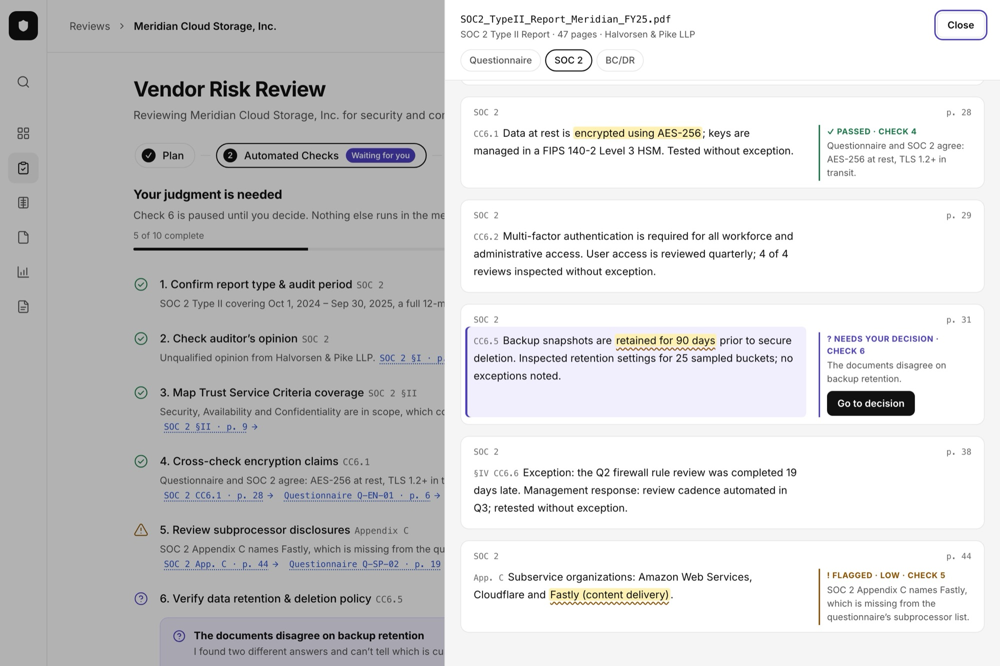
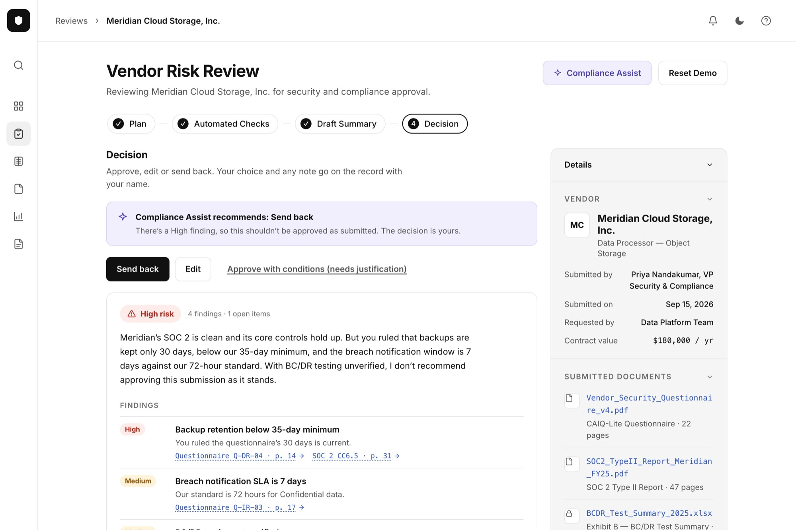

Vendor Risk Review
Vendor Risk Review is a personal project I built to show how I design with AI, from first idea to a live prototype. It's a concept for an AI agent that reviews a vendor's security documents and drafts a risk decision. The agent does the reading and checking. A person makes the call and has to be able to explain it later.
Before a firm works with a vendor, someone checks that the vendor will keep its data safe. The vendor sends a security questionnaire, an audit report and a disaster-recovery test. A reviewer reads them, runs the same checks every time and signs off. They do this many times a week.
I started with a fixed five-step flow and restyled it five times. Each version showed the agent's answers clearly: passed, flagged, needs judgment. None of them showed where an answer came from.
That's the problem behind the problem. A reviewer doesn't get asked "did the AI pass this vendor?" They get asked "why did you approve them?" If the answer lives inside the agent, the reviewer can't defend it. Making the answers look more polished didn't change that.
How might we let a reviewer trace every one of the agent's findings back to its source, without making them read every document?
- Five restyles, one layout. Side by side, every version had a list of checks in the middle and a panel on the side. I'd been changing the paint, not the walls.
- References that looked like links led nowhere. Results cited sections like "CC6.5", but nothing opened. For someone who has to defend a decision, that's the biggest gap.
- The audit trail was the hardest thing to find. The activity log sat collapsed at the bottom of a side panel, even though it's what a reviewer hands to an auditor.
- AI made options cheap, so choosing became the work. Four full directions and a working prototype were quick to make. The design work moved to writing a tight brief, judging what came back and cutting.
Instead of a sixth restyle, I asked a different question: what should sit at the center of the screen? I explored four directions, each with a different answer.
- Testimony: the record at the center, written like a court transcript. Very defensible, but slow to scan.
- Margin Notes: the vendor's documents at the center, with the agent's findings pinned beside the passages they came from.
- Inspection Lanes: checks as tickets moving across a board. Fast, but it hid the reasoning, and the tone felt too playful for audit work.
- The Route: a transit-style map with one check at a time. Clear about where you are, but too slow for someone doing this all week.
I picked Margin Notes because the proof was the main surface. Then I built the existing stepper as a working prototype and compared the two on what reviewers need every day.
Margin Notes won on proof. The stepper won on everything else: the at-a-glance overview, speed across many reviews, fitting into the product, and working on a phone. It was the better idea but the worse tool. So I kept the stepper and brought in two pieces: Margin Notes' evidence view, and Testimony's named record.

Combining the stepper with Margin Notes meant making a few calls:
- I didn't build my favorite direction. Margin Notes made the proof the whole screen, but someone doing many reviews a week needs the overview first. Its best idea lives on as the evidence panel.
- The reviewer can still overrule the agent. Approval isn't blocked at High risk. Instead, "Send back" becomes the main button and approving needs a written reason, so overruling is a deliberate, recorded act.
- The record is a log, not a chat. The record I borrowed from Testimony stays a numbered log with names and times. A conversation reads as talk. A log reads as something a person can be held to.
Proof on demand, not proof everywhere. Keeping the stepper meant the documents couldn't fill the screen the way they did in Margin Notes. But put them on screen all the time and the reviewer reads pages even for checks that passed. Hide them and nobody can verify anything. So I made the proof one click away, and made it the same click everywhere:
- Every claim cites its source. Each check result, finding and log entry carries a reference like SOC 2 CC6.5 · p. 31. Clicking it opens the page beside the workflow, with the exact sentence highlighted and the agent's note in the margin.
- Disputed text looks different. A flagged passage gets a wavy underline as well as a color, so it reads without relying on color.
- When two documents disagree, both pages open side by side. The 30-day and 90-day backup answers each link to their full page, so the reviewer rules with context, not two quotes.
- If there's nothing to cite, the agent says so. The password-protected BC/DR file opens to "nothing in this document was used as evidence."
The agent shows its plan, runs ten checks and pauses when it needs a person. The stepper now says "Waiting for you" when that happens. Every result links to its evidence, and a numbered, timestamped record sits in the main column, ready to copy into an audit file.
The agent does the reading. The reviewer needs to be able to reread any part of it in one click.



A working prototype, live on this site, where every finding links to the sentence it came from.
This is a personal project, so there are no users or metrics. It produced four design directions, three working React prototypes covering the full flow in light and dark mode down to phone width, and the final version you can try here.
If I took it further, I'd test two things first: can a reviewer justify one finding to a mock auditor, and do people actually open the evidence?
With AI, a new direction costs almost nothing, so it's tempting to keep restyling. The useful move was changing the question to "what belongs at the center of the screen?" and then testing my favorite answer against the plain one before shipping.